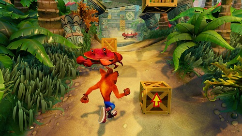

¿Es bueno que se apueste tanto por la nostalgia?
Ahh, la nostalgia, o lo que es igual, el amor por el pasado. Añorar aquellos gustos que cuando más jóvenes llenaban de gozo o tristeza nuestras almas, que al solo escuchar alguna tonada musical, ver alguna imagen icónica o el simple hecho de anunciar un nombre, nos vamos a la calle de la nostalgia a recordar momentos donde seguramente éramos más felices o bien estamos más llenos de vida. Pues si esta pequeña introducción te pareció agradable, seguramente productos que te haga recordar buenos momentos de tu vida aún más. Esto lo tiene muy presente la industria de los videojuegos, es por ello, que más allá de simplemente vender títulos que nos hagan recordar el pasado, reinvenciones, remasterizaciones y remakes, ahora la nostalgia se ha vuelto un negocio redondo. Sin embargo, ¿esto es de provecho para el medio?
Indudablemente las ganancias son escandalosas, aunque es difícil pensar que esto se da por la gente que se abarrota por comprar algo que recuerda el pasado, ya que también puede ser porque simple y llanamente eso es lo único que pueden encontrar en las tiendas. Es entonces cuando empezamos a preguntarnos si esto de apostarle a la nostalgia es algo sabio. Será una estrategia para impulsar la cultura del videojuegos con más público y lograr que no se pierdan esas figuras importantes que han construido al medio, o simplemente son métodos para sacar más dinero por el menor esfuerzo posible.
Veámoslo de esta manera, crear un juego, ya sea de los diferentes formatos antes mencionados, o sea, reinvención, remasterización, remakes, blah blah blah, no es nada sencillo en el campo del desarrollo, pero no se necesita ser un genio creador de videojuegos para saber que hacer un título del que ya se tiene una base, mínimo como concepto y mecánica, es mucho más fácil que un juego totalmente nuevo del que se tiene que empezar desde cero.
Este tema, recuerda un poco al que muchos países se enfrentan una vez que toca recordar su historia. Mucho grandes dirigentes y estadistas se han preguntado alguna vez si es necesario celebrar la historia del país que dirigen, o no perder el tiempo en eso y concentrarse en el pasado. Pues eso mismo desprende la disyuntiva en esta situación con la gran diferencia que los videojuegos no dejan de ser un producto que se comercializa para conseguir dinero, por lo que, más allá de los resultados políticos, aquí las ventas y el dinero hablan.
¿Es más barato hacer un remake que una nueva IP y se venden igual?, entonces adelante, para que ocupar el esfuerzo en un nuevo juego que quizá no agrade a muchos si estamos seguro que Crash Bandicoot vende. Para que evolucionar con géneros y técnicas que no se hayan visto antes, si al final los videojugadores siempre piden más de los mismo y si intentas cambiar la fórmula en pro de la evolución sólo te ganarás quejas y reclamos en redes sociales.

Lo sabemos, nunca se tiene a todo el mundo satisfecho, pero en este caso, más allá de irnos por un absoluto, aquí depende del tipo de videojugador. Hay quienes ya con lo vivido tiene suficiente para consumir su contenido deseado, pero habemos otros que esperamos nuevas sorpresas dentro de este medio, y que así nos regalen experiencia igual de buenas y emocionantes como cuando éramos niños, el tema es qué tan abiertos estamos a nuevas experiencias. Aunque eso sí, sea lo que sea, hay un hecho innegable, lo que se estaca se echa a perder, y eso, mis amigos, no tiene variantes.